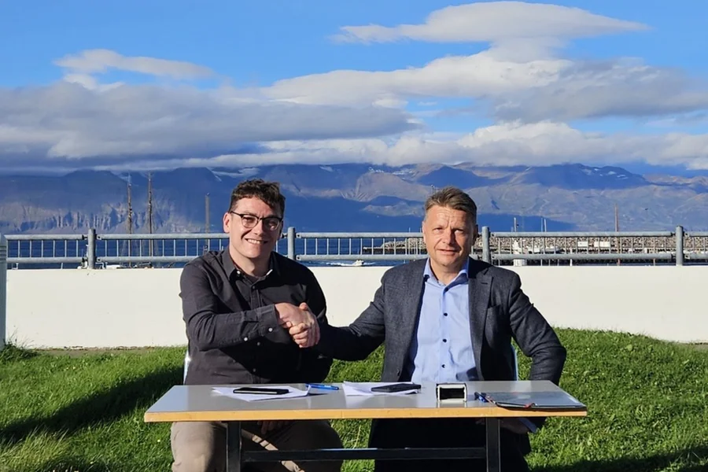
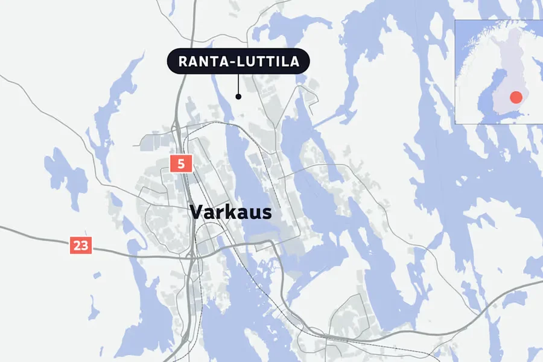

2. sep. 2025
Scale42 og GIG planlegger 50 MW datasenter på Island
Dekning i Data Centre Dynamics av Bakki-fellesforetaket og dets initielle kapasitet.
Les →Neste generasjons europeisk digital infrastruktur
Scale42 utvikler og driver engros AI-datasentre i Norge, Finland, Sverige og Island — samlokalisert med rikelig ren energi, spesialbygd for databehandling med høy tetthet.
Rimelig ren energi
Akselerert databehandling
Neste generasjons datasentre
Plattformen
Datasentrene våre ligger der fornybar energi finnes i overflod. Denne energi-først-strategien gjør at kundene kan drifte AI-databehandling til betydelig lavere kostnad, samtidig som de opprettholder bærekraftsledelse i bransjen.
Anleggene våre er spesialbygd for å støtte AI- og høyytelses databehandlingsmiljøer med høy tetthet. Designet inkluderer avansert kjøling, høykapasitets strømlevering og den effektive infrastrukturen som kreves for moderne databehandling.
Scale42 utvikler modulære, standardiserte datasenteranlegg som tilbyr engros AI-klar plass. Kundene installerer og drifter sin egen datakraft, mens Scale42 leverer det sikre, høyenergi- og energieffektive miljøet som kreves for storskala drift.
Anlegg samlokalisert med vannkraft, geotermisk og annen langvarig fornybar baselast — som låser inn konkurransedyktig, forutsigbar energiprising.
Avansert kjøling, høykapasitets strøm og effektiv infrastruktur designet for GPU/TPU/ASIC-sentriske arbeidslaster i stor skala.
Du installerer og drifter datakraften din. Vi leverer det sikre, høyenergi- og energieffektive miljøet rundt den.
Bærekraft
Hvert Scale42-anlegg er dimensjonert mot langvarig fornybar baselast — vannkraft i Norge, geotermisk på Island, blandet fornybar i Finland og Sverige. Mål valideres per anlegg ved energisering.
På tvers av aktiv pipeline
For 12,5 MW modulutrullinger
Det nordiske strømnettet er blant de reneste globalt
Der fjernvarmenett gjør det levedyktig
Mål: ISO 27001 ISO 14001 ISO 50001 EU CSRD-tilpasset Uptime Tier III-design
Modulært AI-datasenterdesign
En modulær arkitektur muliggjør rask utbygging og forutsigbar utvidelse — og støtter databehandlingsmiljøer med høy tetthet med svært effektive kjøle- og strømsystemer. Designet for direkte væskekjøling (DLC) og luftkjølte GPU-klynger fra 50 kW til 130 kW per rack.
Standardisert, repeterbar shell-and-core. Kombiner 4× for 50 MW campus, 8× for 100 MW, skaler til 500 MW+ flaggskipsanlegg.
Designet for DLC og immersjon ved racket, og støtter høy-tetthets GPU/TPU-klynger fra 50–130 kW.
Nøytralt engros-skall. Du tar med datakraften og drifter den; vi leverer strøm, fiber og det sikre miljøet.
Skiftet
Tradisjonelle datasentre
Bygd primært for å betjene forbrukerrettede SaaS-applikasjoner, og låser inn høy CAPEX og OPEX gjennom fokus på:
Denne infrastrukturen:
Til sammen bidrar dette til et stort fysisk fotavtrykk og videre høy CAPEX og OPEX.
Neste generasjons datasentre
Neste generasjons datasentre — f.eks. bygd for å trene komplekse AI-modeller — kan dra nytte av betydelig lavere CAPEX og OPEX ved å fokusere på:
De er typisk:
Høy utstyrstetthet og plassering utenfor byer gir et mindre fotavtrykk og dramatisk lavere CAPEX og OPEX vs. tradisjonelle datasentre.
Grunnleggerne

CEO
7+ år innen datasenterutvikling. Forretningsstrategi og energimarkedsekspertise. Ledet team fra oppstart til 8-sifret exit. Bakgrunn fra næringseiendom.
in
CDO
5+ år innen datasenterutvikling. Test og integrasjon av høyspentsystemer. 15+ år elektroingeniørfag, inkludert nordsjøolje og -gass.
in
CTO
7+ år innen datasenterutvikling. Datasentersystemdesign og -ledelse. 20+ år i IT-systemadministrasjon, tekniske roller og servicearbeid i Storbritannia.
inTeamet

COO
4+ år innen datasenterdrift og -utvikling. MEng petroleumsingeniør. Fagekspert innen AgriTech og sirkulær økonomi.
in
IT-direktør
Datasenterdesign, -bygg og -drift. 25+ år innen IT-løsningsutvikling. Nettverk, systemintegrasjon og leverandørstyring.
in
CSO
Selskapsstrategi og kapitalinnhenting. 11 år i forskning og strategi ved et av Europas ledende hedgefond.
in
CIO
Informasjon, data og forskningsledelse. 8+ år i geografisk etterretning og innovasjon. ESA og UK Space Agency-kontraktør.
in
CFO
15 år innen teknologi, FinTech og Life Sciences. Lukking av betydelige finansieringsrunder og PE-aksjonæravtaler.
in
Kontaktperson
13+ år innen nordsjøolje og -gass. Feltingeniør og leder. Energisparing og teknisk isolasjon.
in
Senior prosjektleder
Maskin-elektro- og bygg-vannkraftingeniør. 18+ år som teknisk sjef, prosjektleder og ingeniør internasjonalt.
in
Executive Assistant
16+ år innen drift og teamledelse. Konsernøkonomisk styring. Tidsstyring.
inNyheter

2. sep. 2025
Dekning i Data Centre Dynamics av Bakki-fellesforetaket og dets initielle kapasitet.
Les →
2. sep. 2025
Et fellesforetak som skaper en integrert plattform for energi og digital infrastruktur i Norden.
Les →
29. apr. 2025
GIG Ltd og Scale42 kunngjør at de er i avanserte samtaler om opprettelse av et fellesforetak for integrert infrastruktur.
Les →
27. mar. 2025
Yle melder om Scale42s finske prosjekt — "tilliten er stor", sier ordføreren.
Les →
29. jan. 2025
Will Tasney, Thomas Beaton og Jamie Stewart om hva algoritmisk effektivitet betyr for spredningen av AI-databehandling.
Les →Kontakt
Skriv inn e-postadressen din nedenfor, så tar teamet vårt kontakt.